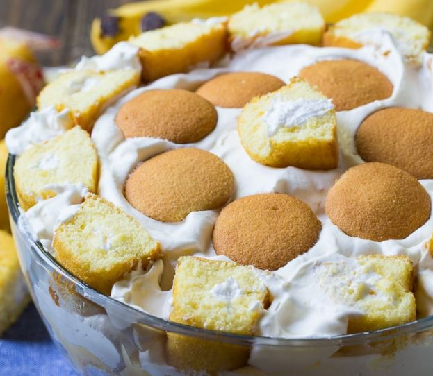

Twinkie Banana Pudding

Twinkie Banana Pudding is made from sliced twinkies, bananas, vanilla pudding,
whipped cream, and a few vanilla wafers, all layered together in a trifle bowl.
This twist on banana pudding is perfect for your next potluck or picnic.
Ingredients
- 2 (3.4-ounce) boxes instant vanilla pudding mix
- 3 1/4 cups milk/li>
- 1 box vanilla wafers
- 4 bananas
- 1 box Twinkies, each one cut into thirds
- 1 cup heavy cream
- 1 1/2 tablespoons sugar
Instrucctions
- Use an electric mixer to beat pudding mix and milk until smooth.
- Cover the bottom of a trifle dish or glass bowl with vanilla wafers.
- Layer banana slices on top of the Vanilla wafers.
- Arrange Twinkie slices in a circle around the edge of the bowl so that
they press against the glass with the cut side toward the glass.
Fill in the middle with Twnkie slices.
- Pour half the pudding mix on top and use a rubber spatula to smooth it
out and work it down into the cracks.
- Repeat with another layer of Vanilla wafers and banana slices.
- Pour remaining pudding on top and smooth it out.
- Arrange twinkie slices around the perimeter, with the cut sides up,
pressing them down some into the pudding.
- Whip the cream gradually adding sugar as you whip it.
Stop when it forms stiff peaks.
- Spread whipped cream in the middle, up to and around the Twinkies,
but not on top of them.
- Place 1 Twinkie slice in the very middle and arrange a circle of
Vanilla Wafers around it. Cover with plastic wrap and refrigerate
for at least 2-3 hours before serving.
Back